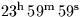

Increment to be applied to Coordinated Universal Time UTC to give
International Atomic Time TAI.
CALL:
D = sla_DAT (UTC)
GIVEN:
UTC
D
UTC date as a modified JD (JD-2400000.5)
RETURNED:
sla_DAT
D
TAI-UTC in seconds
NOTES:
1.
The UTC is specified to be a date rather than a time to indicate
that care needs to be taken not to specify an instant which lies
within a leap second. Though in most cases UTC can include the
fractional part, correct behaviour on the day of a leap second
can be guaranteed only up to the end of the second
.
2.
UTC began at 1960 January 1. To specify a UTC prior to this
date would be meaningless; in such cases the parameters
for the year 1960 are used by default.
3.
This routine has to be updated on each occasion that a
leap second is announced, and programs using it relinked.
Refer to the program source code for information on when the
most recent leap second was added.